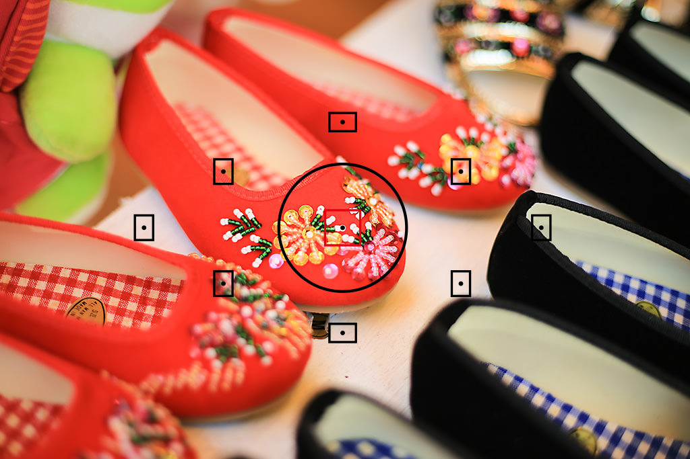
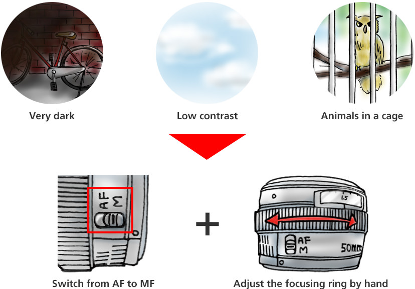
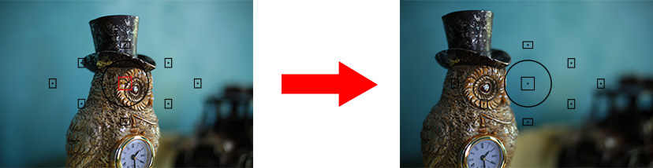
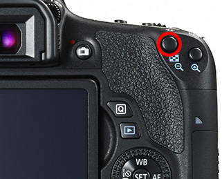
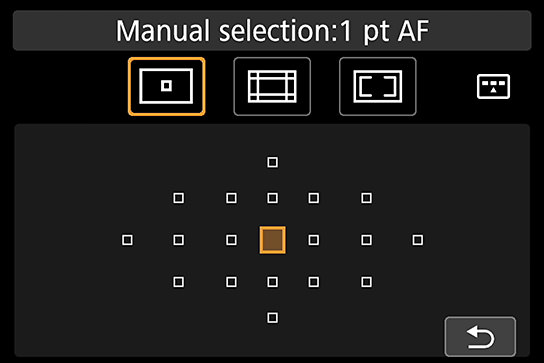
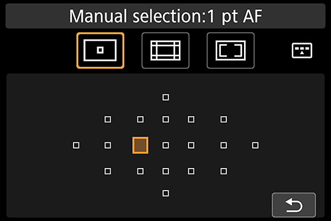
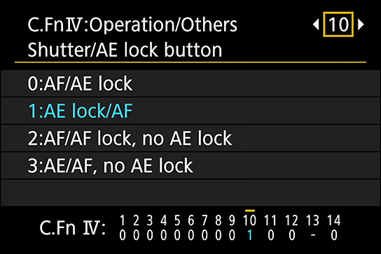
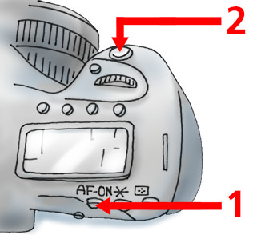

Photography Basic | Part 10
Establishing Focus
The one thing that enables the photographer to convey his photographic intent to the viewer is establishing the focus. What are the secrets to establishing the best focus? Let’s find out more about the special features of autofocus (AF) and manual focus (MF).

There are two ways of establishing focus: Using the camera autofocus system, or manual selection and adjustment
Points-to-note
-“AF” refers to “autofocus”. This is when the camera tunes itself to establish the best focus when taking a photo.
-“MF” refers to “manual focus”. This is when the photographer adjusts the focus manually to establish the focus.
Establishing focus is a basic skill in photo taking. There are two ways to establish focus. The first is through autofocus (AF) operation, where the camera automatically establishes focus. The second is through manual focus (MF) operation, where the photographer adjusts the focus by hand.
In most shooting scenes, AF can do a good job of establishing focus. When shooting photos in AF mode, all it takes is to simply press the shutter button lightly (“half-press” the shutter button) to activate the AF and AE functions,and the camera takes care of the rest. Once focus has been established, press the shutter button down (“full-press” the shutter button).
This is what AF is all about—shooting good pictures with very simple operations. For more control over the composition of your photos, you can pre-select the active AF area (or AF point) during autofocus operations.
But AF is not perfect and there is a limit to what it can do. Sometimes, the subject or the scene makes it difficult or even impossible to establish focus. When up against these situations, make good use of MF. By looking through the viewfinder and turning the focusing ring with our hands, we can establish the focus just as well too. Since we can enlarge the focus area when in Live View mode, it is possible to establish focus more precisely.
AF
EOS 80D/ EF-S18-135mm f/3.5-5.6 IS USM/ FL: 124mm (198mm equivalent)/ Aperture-priority AE (f/5.6, 1/200 sec, EV-0.3)/ ISO 3200/ WB: Auto
Benefits: Can establish focus quickly
Drawbacks: Some subjects and scenes are not ideal for establishing focus
Since AF establishes focus quickly, it is very convenient in most situations. But sometimes there are subjects or scenes that are not ideal for establishing focus. It is wise to switch to MF when the situation calls for it.
MF
EOS 6D/ EF50mm f/1.8 STM/ FL: 50mm/ Aperture-priority AE (f/3.5, 1/40 sec, EV-0.7)/ ISO 100/ WB: Auto
Benefits: Can observe the subject with our own eyes as we establish focus
Drawbacks: Takes more time before we can actually shoot
As we can observe the subject while we adjust the focus in MF, it makes it possible to establish a more precise focus. Nevertheless, the whole process takes more time. We have to spend time establishing focus before we can go into the actual shooting.
When the subject or the scene is not right for AF, switch to MF
When the subject happens to be in a very dark place, when it is a low contrast scene or when it is a scene where the subject is sometimes blocked by nearer objects (such as when photographing animals in a cage), AF cannot establish focus easily. When faced with these situations, switch the focus switch on your lens from AF to MF. By switching to MF, we can establish focus by adjusting the focusing ring by hand.
Related concept 1: AF Lock
Know the “AF Lock” shooting technique, this is a way of taking photos in AF mode where the focus is first established before fine-tuning the composition of the photo.
First, manually select the active AF point. Choose the AF area/point that is located closest to the subject of interest in your ideal composition. Although AF Lock can be applied with any AF area mode, in general, the centre AF point should have the highest precision and is the best choice when dealing with dark scenes.
Next, align the selected AF point with any part of your intended subject, and press the shutter halfway. When the camera has established focus, leave the button half pressed and fine tune the composition. When that is done, press down fully and complete the shoot.
If you can master the technique of AF Lock, you can place the primary subject (that you established focus on) anywhere within the image frame—not just in the centre.
Selecting the active AF points (*on the EOS 760D)
Press the AF point selection button (circled in red) to display the screen for Single-point AF (Manual selection).
*If another mode is displayed, change the mode using the AF area selection button.
The Single-point AF (Manual selection) screen allows you to choose the active AF point.
Next, use the Main Dial, the Quick Control Dial or the touchscreen to select your preferred AF point. Here, the point to the left of the centre AF point is selected.
Related concept 2: The back-button AF technique
Normally, when the shutter button is half pressed, AF (focus establishment) and AE (exposure determination) are activated simultaneously. But by customizing the camera, we can get AF and AE to operate independently. You do this by operating the AF with the AF-ON button in the back of the camera (or the AE lock button), and the AE with the shutter button. We call this technique the back-button AF technique.
The advantage of this technique is that when the camera is in AF Lock mode, there is no need to keep the shutter button half pressed. Once focus is established with the AF-On button, the point of focus is fixed, and won’t change even when you remove your finger from the button.
With this technique, you can take as many photos as you like with different scenes but the same composition.
The back-button AF technique
You can customize your camera to carry out focus establishment and exposure determination independently of each other.
1. Establish focus in AF-ON mode
2. Press the shutter button to release the shutter Use the AF-ON button (or AE Lock button) to establish the focus, then release the shutter with the shutter button. When you want to reestablish the focus, all you have to do is to press AF-ON again.
EOS 5D Mark III/ EF24-70mm f/2.8L II USM/ FL: 70mm/ Aperture-priority AE (f/2.8, 1/400 sec, EV+0.6)/ ISO 100/ WB: Daylight
I established focus on a cat that appeared all of a sudden with the back-button AF technique, engaged AF Lock and then fine-tuned the scene. I managed to try out different compositions continuously with the help of the technique.